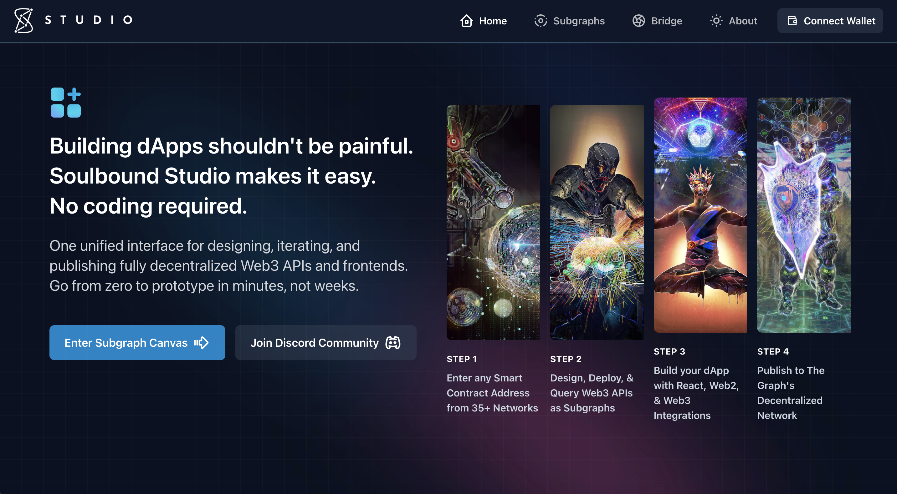
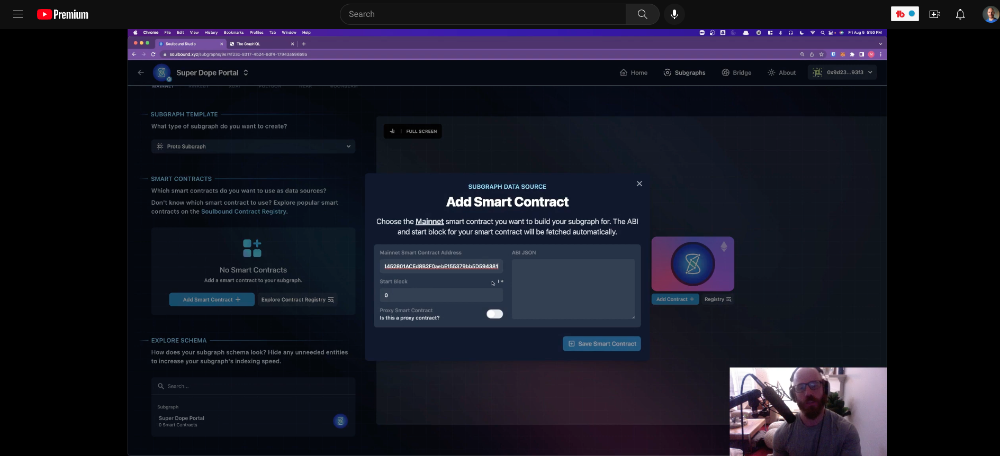
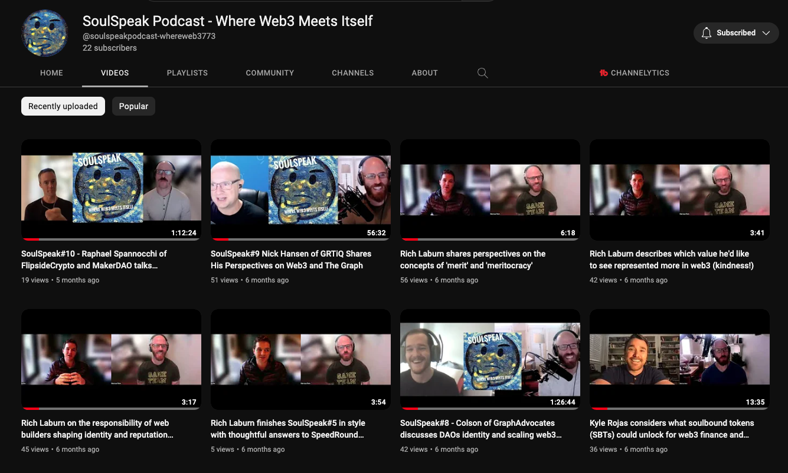
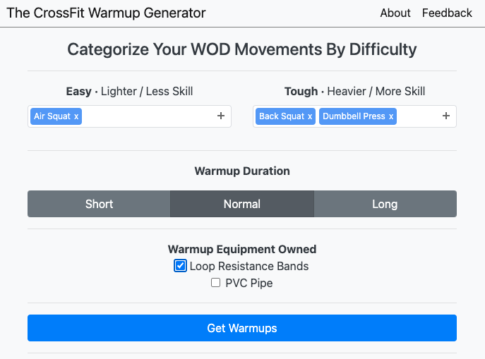
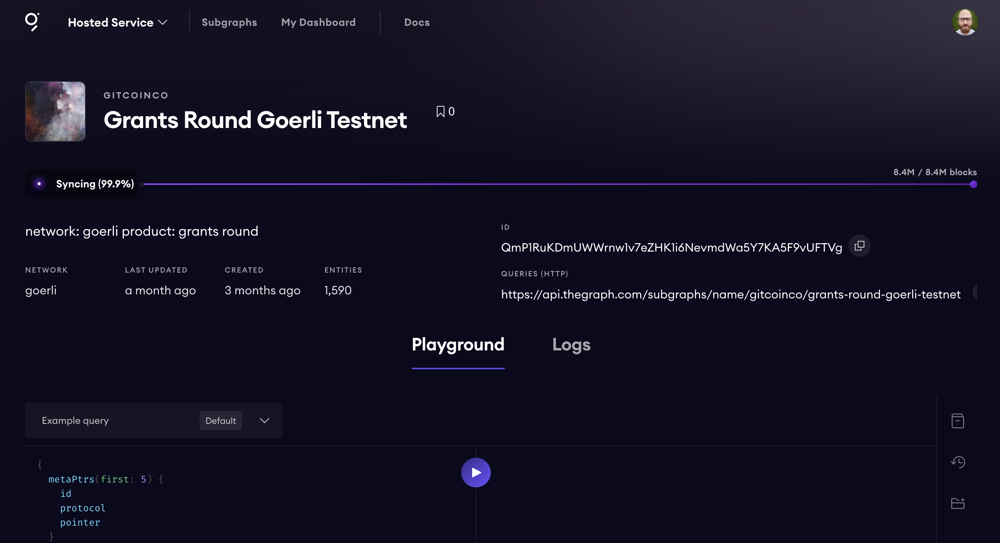
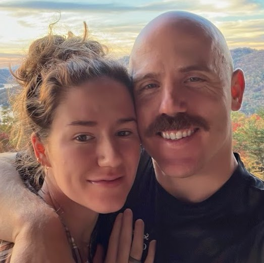
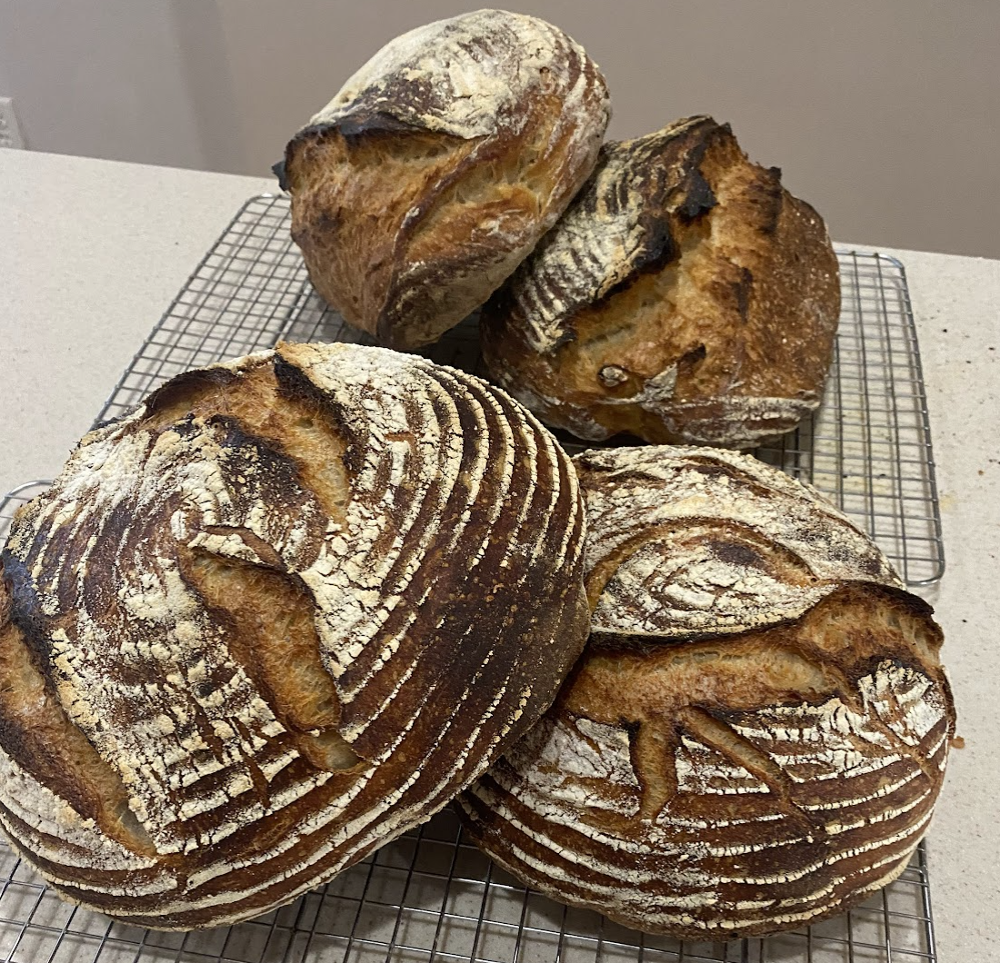

Marcus Rein DevRel
Hi There
My
twitter
,
lens
, and
linkedin
.
Experience
DevRel @
Soulbound Labs
(2021-2022)
-
Twitter
-
YouTube
-
Podcast
-
GitHub Repo



Onboarded devs into the Soulbound Studio suite. Responsible for dev success through tutorial creation, subgraph building, managing meetings, and interfacing with other teams. Podcast host. Managed the twitter, discord, and telegram. Built and interfaced with subgraphs using assemblyscript + GraphQL.
OnlyDev @
CrossFit Warmup Generator
(2020)
-
GitHub Repo

Created a mobile-first web app. Used my Doctorate in Physical Therapy with Python + Flask + JavaScript + HTML + CSS + Bootstrap to create quick biomechanically considerate warmup solutions for barbell geeks
Currently Building
Sybil Attack Analytics
-
Subgraph Queryed
-
Vue Coursework
-
HTML/CSS/JavaScript Coursework

Using a subgraph to index + query GitCoin Grants data to then assess for Sybil attack patterns, then display the data through Vue.
About Me
Husband - Musician - Baker - Former D1 Athlete - Former USA Mens Youth Soccer Goalkeeper
 